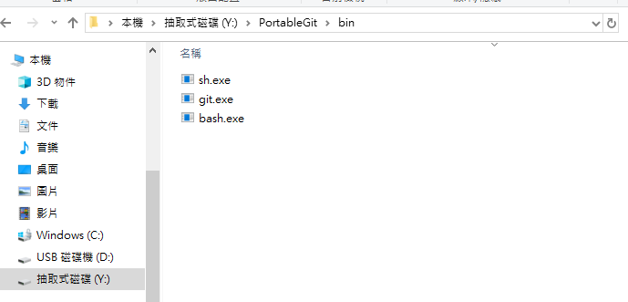
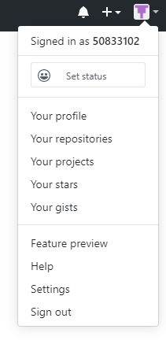
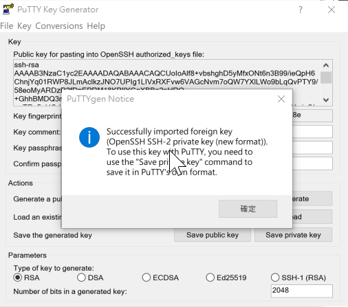
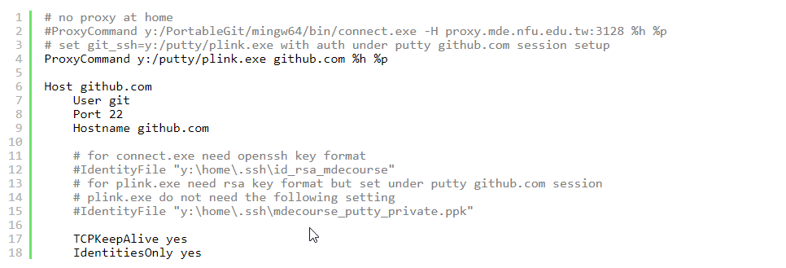
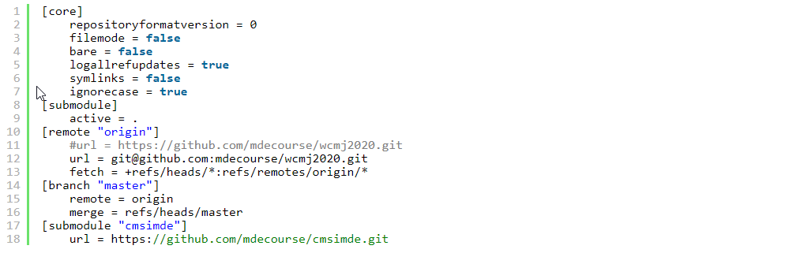

W09 <<
Previous Next >> W11
W10
今天主要是關於public key 和 private key 的教學
*來源https://drive.google.com/file/d/1VNBHNMXS1-wG7oaKDCpG5p3khsffB7oa/view
和
http://mde.tw/wcmj2020/content/%E4%BB%A5%20SSH%20%E7%B6%AD%E8%AD%B7%E5%80%89%E5%84%B2.html
目的是我們再用start.bat指令git push上github
1 使用putty 創建一個key (putty 可以在 Y 槽找到((Y槽要開啟wcmj2020tool的start.bat出現))
2 選擇public
3 儲存到Y槽的home
3 打開黑色指令視窗
4 打sh (對，只要sh)

5 打ssh-keygen -t rsa -b 4096 -c "密碼名"
6 接下來會問你要不要為它設保護，Enter就好
7 出現Enter file in which to save the key (/y/home/.ssh/id_rsa):
打/y/keys/id_rsa
y=y槽；home=檔案名；.ssh=檔案名 ；id_rsa=key的名字
8 這時key已經產生了，接著我們前往key的文件檔所在(接續上面/y/home/.ssh/id_rsa為例，就是.ssh)，把它丟進編輯器，再把產生的內容複製貼上到SSH keys(setting->ssh and gpg keys->new ssh key)
9 現在github已經得到ssh key 了

___現在要讓start.bat認得key
10 開啟puttygen.exe，轉成ppk.格式，同樣儲存到home
11將start.bat丟到編輯器(那個白白的，把檔案丟進去會懺聲一對程式碼或亂碼的框框，我終於知道它的名字了)，插入
set GIT_HOME=%Disk%:\portablegit\bin\
set GIT_SSH=%Disk%:\putty\plink.exe
這兩行
12開啟puttygen.exe，選擇load，選擇id_rsa，選擇save private key，這些動作是將剛剛轉成ppk的id_rsa存檔，成功會出現下面這個畫面

13開啟putty.exe，接著Connection->SSH->Auth
14確定home裡的.ssh目錄中的config設定檔長這樣

(1)前往github的wcmj2020，點開那個能複製網址的綠色格子，再選取右上角W10
今天主要是關於public key 和 private key 的教學
*來源
https://drive.google.com/file/d/1VNBHNMXS1-wG7oaKDCpG5p3khsffB7oa/view
和
http://mde.tw/wcmj2020/content/%E4%BB%A5%20SSH%20%E7%B6%AD%E8%AD%B7%E5%80%89%E5%84%B2.html
目的是我們再用start.bat指令git push上github
1 使用putty 創建一個key (putty 可以在 Y 槽找到((Y槽要開啟wcmj2020tool的start.bat出現))
2 選擇public
3 儲存到Y槽的home
3 打開黑色指令視窗
4 打sh (對，只要sh)

5 打ssh-keygen -t rsa -b 4096 -c "密碼名"
6 接下來會問你要不要為它設保護，Enter就好
7 出現Enter file in which to save the key (/y/home/.ssh/id_rsa):
打/y/keys/id_rsa
y=y槽；home=檔案名；.ssh=檔案名 ；id_rsa=key的名字
8 這時key已經產生了，接著我們前往key的文件檔所在(接續上面/y/home/.ssh/id_rsa為例，就是.ssh)，把它丟進編輯器，再把產生的內容複製貼上到SSH keys(setting->ssh and gpg keys->new ssh key)
9 現在github已經得到ssh key 了

___現在要讓start.bat認得key
10 開啟puttygen.exe，轉成ppk.格式，同樣儲存到home
11將start.bat丟到編輯器(那個白白的，把檔案丟進去會懺聲一對程式碼或亂碼的框框，我終於知道它的名字了)，插入
set GIT_HOME=%Disk%:\portablegit\bin\
set GIT_SSH=%Disk%:\putty\plink.exe
這兩行
12開啟puttygen.exe，選擇load，選擇id_rsa，選擇save private key，這些動作是將剛剛轉成ppk的id_rsa存檔，成功會出現下面這個畫面

13開啟putty.exe，接著Connection->SSH->Auth
14確定home裡的.ssh目錄中的config設定檔長這樣

15 最後再將 wcmj202的 .git目錄下的config檔案中的連線協定, 由https改為ssh連線ex:
(1)前往github的wcmj2020，點開那個能複製網址的綠色格子，再選取右上角的use ssh，再複製
(2)丟config到編輯器
(3)把url那段改掉，如下

16感動地去睡覺
*要出去那個彩色區域要打 exit !!
(我解鎖色彩功能了!!!)
(git push 如果卡住((y/n那裏))，開putty連github.com，成功後再git push)
W09 <<
Previous Next >> W11